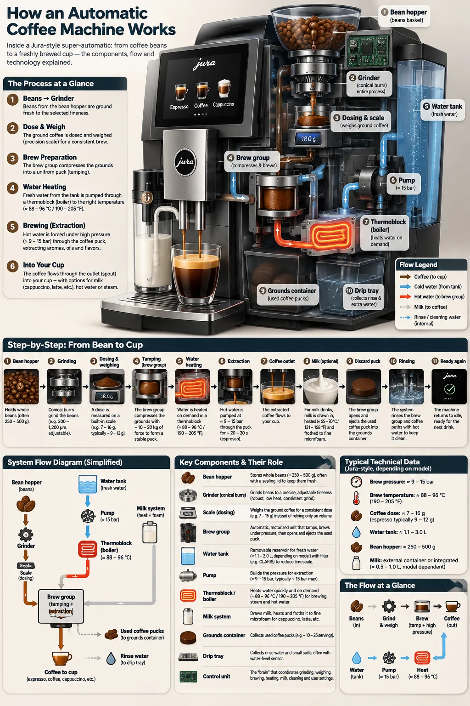
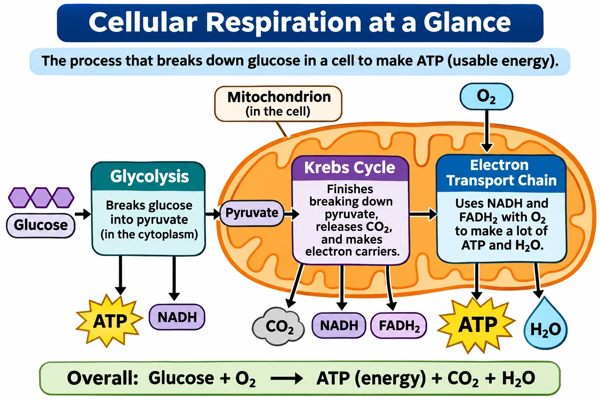
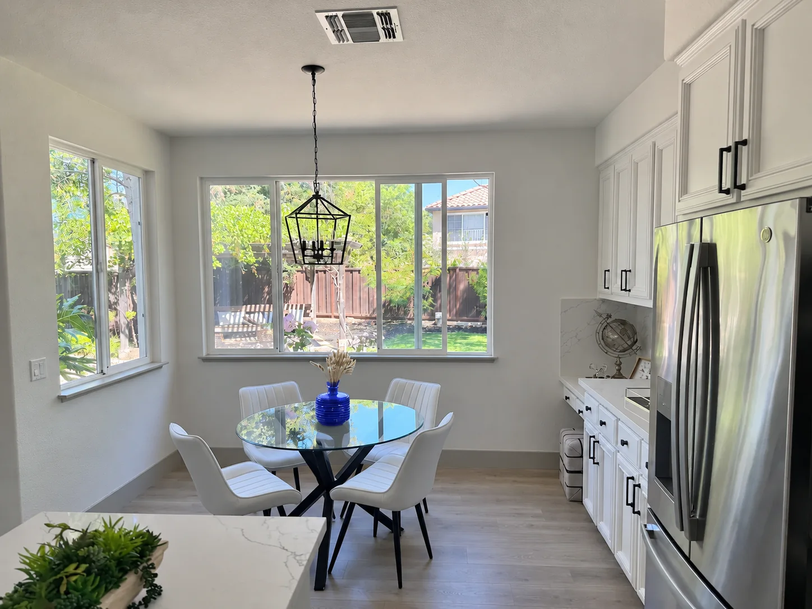

1. Complexity：纸雕足球夺冠
Sunburst · low vs high complexity
A premium handcrafted layered paper-cut illustration of a football team celebrating a championship victory inside a packed stadium.

非官方合集 OpenAI · 2026-11-04 Flare & Sunburst
介绍、模型特性与官方提示词案例画廊。完整中文文档见仓库 README。
OpenAI Images 2.6 于 2026-11-04 发布；API 型号为 gpt-image-2.6-flare（快迭代）与 gpt-image-2.6-sunburst（精细编辑）。官方称速度约提升 50%，并新增原生 GIF、SVG、markup 标注编辑与 complexity 参数。
| 产品名 | Images 2.6（ChatGPT / Codex） |
|---|---|
| API | gpt-image-2.6-flare · gpt-image-2.6-sunburst |
| 端点 | /v1/images/generations · /v1/images/edits |
| 官方公告 | openai.com/index/introducing-images-2-6 |
图片为 OpenAI 开发者文档示例镜像；提示词原文见各卡片。隐私场景已选用官方合成示例，无个人隐私打码需求。
Sunburst · low vs high complexity
A premium handcrafted layered paper-cut illustration of a football team celebrating a championship victory inside a packed stadium.

Sunburst · gif · 9 frames × 200ms
A little monkey in an olive-green hooded coat stands in a snowy pine forest at dusk... Make the motion loop smoothly.


Flare vs Sunburst
Create a photorealistic candid photograph of an elderly sailor standing on a small fishing boat. ... No glamorization, no heavy retouching.

Create a detailed Infographic of the functioning and flow of an automatic coffee machine like a Jura. ...

... tagline "Yours to Create." ... Render the tagline exactly once ...

Create an original, non-infringing logo for a company called Field & Flour, a local bakery. ... Fully transparent background.

Create a short vertical comic-style reel with 4 panels. ...

Create a realistic mobile app UI mockup for a local farmers market. ... Place the UI mockup in an iPhone frame.

Create a simple biology diagram titled "Cellular Respiration at a Glance" for high school students. ...

示例数字为虚构，请替换为真实数据
Create one pitch-deck slide titled "Market Opportunity" ... TAM $42B / SAM $8.7B / SOM $340M ...


Recolor the striped vase inside the red circle to solid cobalt blue ceramic. ... Remove the red circle from the finished photo.

Extract the product from the input image and isolate it on a fully transparent background. ...
... Include ONLY this card text: "Merry Christmas — some memories never fade."
... packaging text: "Christmas Memories Edition"
curl -X POST "https://api.openai.com/v1/images/generations" \
-H "Authorization: Bearer $OPENAI_API_KEY" \
-H "Content-Type: application/json" \
-d '{"model":"gpt-image-2.6-sunburst","prompt":"A minimalist ceramic mug on limestone","quality":"medium","size":"1024x1024","output_format":"png"}'
完整参数表、定价与接入说明见 README.md。